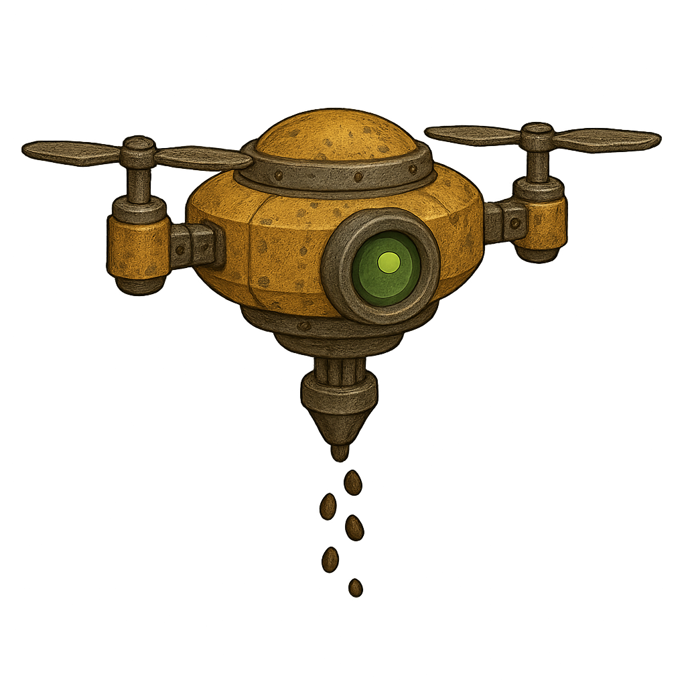

🤖 Bot Layer Splitting Guide
How to separate your Plant Seeds Bot into spinning layers
⚠️ IMPORTANT: Make copies of your original image before editing! Always work on copies, never the original.
📋 What You're Creating
Layer 1: Body
plant-seeds-body.png
The main bot body WITHOUT the 4 propellers
Layer 2: Propellers
plant-seeds-propellers.png
ONLY the 4 propellers on transparent background
Combined Result
When layered together
Propellers will rotate!
Eye (Green - keep on body)
🎯 Identifying the Parts
Your Plant Seeds Bot

TOP LEFT TOP RIGHT
PROPELLER PROPELLER
╱╲ ╱╲
╱ ╲ ╱ ╲
◄────┼──────────┼────►
│ ┌────┐ │
│ │ │ │ ← Main Body
│ │ ● │ │ (Golden/Brown)
│ │ │ │ Keep this!
│ └────┘ │
◄────┼──────────┼────►
╲ ╱ ╲ ╱
╲╱ ╲╱
BOTTOM LEFT BOTTOM RIGHT
PROPELLER PROPELLER
🎯 TO CREATE BODY LAYER:
→ Erase the 4 propellers
→ Keep everything else
🎯 TO CREATE PROPELLER LAYER:
→ Keep ONLY the 4 propellers
→ Erase everything else
🛠️ Step-by-Step Instructions
Step 1: Open Your Image Editor
Recommended FREE tools:
- Photopea (Online - No install needed): photopea.com
- GIMP (Desktop): Free & powerful
- Paint.NET (Windows): Simple & effective
💡 TIP: Photopea works exactly like Photoshop but runs in your browser for free!
Step 2: Create Layer 1 - Body (Without Propellers)
- Open
plant-seeds-original.png in your image editor
- Select the eraser tool or use the selection + delete method
- Carefully erase all 4 propellers:
- Top-left propeller
- Bottom-left propeller
- Top-right propeller
- Bottom-right propeller
- Make sure the erased areas are transparent (you should see a checkerboard pattern)
- Save as:
plant-seeds-body.png (PNG format with transparency)
What to erase: The 4 propeller blades sticking out from the sides
What to KEEP: The main golden body, the eye, the bottom spike, everything else!
Step 3: Create Layer 2 - Propellers Only
- Open
plant-seeds-original.png again (fresh copy)
- This time, do the opposite - erase EVERYTHING except the 4 propellers
- Keep only:
- Top-left propeller
- Bottom-left propeller
- Top-right propeller
- Bottom-right propeller
- Erase the body, eye, and everything else
- Save as:
plant-seeds-propellers.png (PNG format with transparency)
What to KEEP: Only the 4 propeller blades
What to erase: Everything else - body, eye, spike, all of it!
Step 4: Save & Test
- Save both files in this folder:
images/auto-bots/
- Make sure they're named exactly:
plant-seeds-body.pngplant-seeds-propellers.png
- Refresh
animation-test.html
- Your REAL propellers should now be spinning! 🎉
💡 Pro Tips
Using Photopea (Recommended for beginners):
- Go to photopea.com
- Click "Open from Computer" and select your bot image
- Use the Eraser Tool (E) or Magic Wand (W) + Delete
- Make the eraser bigger with [ and ] keys
- Zoom in/out with Ctrl + Mouse Wheel
- File → Export As → PNG (make sure "Transparency" is checked!)
Quick Selection Method:
- Use the Lasso Tool or Polygon Lasso to select a propeller
- Press Delete to remove it
- Ctrl+D to deselect
- Repeat for each propeller
⚠️ IMPORTANT CHECKS:
- ✅ Both images must be the SAME SIZE as the original
- ✅ Use PNG format (supports transparency)
- ✅ Transparent areas should show a checkerboard pattern
- ✅ Don't crop or resize - keep the canvas size identical!
❓ Troubleshooting
Problem: White background instead of transparent
Solution: Make sure you're saving as PNG and that the layer has transparency enabled. In most editors, delete the background layer first.
Problem: Propellers don't line up when layered
Solution: Don't resize or crop! Both layers must be the exact same dimensions as the original image.
Problem: Animation test doesn't load my layers
Solution: Check the file names are exactly plant-seeds-body.png and plant-seeds-propellers.png (no extra spaces or characters). Refresh the page with Ctrl+F5.
🎬 You're Ready!
Once you've created both layer files, refresh animation-test.html
and watch your REAL propellers spin! 🚁✨